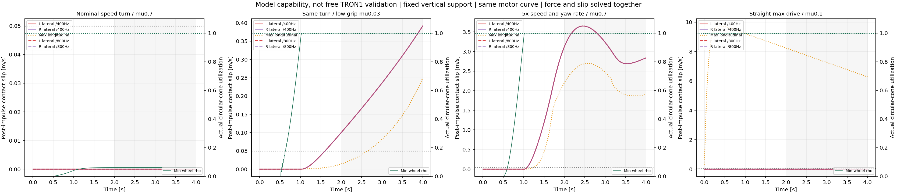
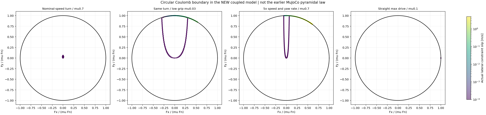
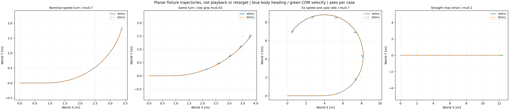

A minimum Coulomb stick/slip model already sustains saturation and lateral sliding for over2s under appropriate demand. A nonlinear empirical tire curve is not necessary to make those two conditions coexist. The result is a model-capability demonstration with a planar support fixture,not successful free-body TRON1 drift.
The prior MPPI audits show brief slip in one particular soft-contact model and task. They do not demonstrate that friction saturation and sustained sliding cannot coexist. The original50Hz reference has lateral COM acceleration demand at only5.8% /13.8% /16.3% of μg at median/p95/max for μ=0.7. This is a kinematic force-demand estimate,not measured tire force; it excludes leg actuation and variable contact loads. Large geometric β alone therefore does not establish an inertia-demanding friction-limit maneuver.
Velocities are(vx_world,vy_world,yaw rate,omegaL,omegaR). Mass22.273kg,yaw inertia0.4035kgm²,wheel axial inertia0.009743kgm²,radius0.127m and track0.31114m come from the original TRON1 asset at its initial pose. Both motors use the original12Nm/100rad/s DC envelope. Fixed feedback gains command forward speed and yaw rate every20ms; torque clipping is recomputed each physical step. There is no prescribed tangent force,root velocity playback or forced lateral slip.
u_free = u_k + h M^-1 S^T tau A = Jt M^-1 Jt^T; b = Jt u_free p* = argmin [ 0.5 p^T A p + b^T p ], subject to ||p_i|| <= mu Fn_i h u_next = u_free + M^-1 Jt^T p* v_slip,i = Jt_i u_next; Ft_i = p_i / h Interior: v_slip = 0 and ||Ft|| <= mu Fn (sticking / rolling) Sliding: v_slip != 0 and Ft = -mu Fn v_slip/||v_slip|| M has BOTH body inertia and wheel-spin inertia; longitudinal and lateral force share one circle.
The convex program is our fixed-normal tangential formulation of the documented Coulomb stick/slip law; it does not use the Siconos runtime and is not a general unknown-normal contact solver. A high-accuracy projected-KKT check controls the ADMM solve. Contact dissipated power and discrete kinetic-energy balance are checked independently.
Vertical motion,roll,pitch and leg motion are removed by the fixture. Equal Fn=mg/2 is an assumption,not measured support. Camber is zero. This model does not test whether a free TRON1 can lean,keep contact,or sustain the same forces. Its circular hard-friction law also differs from the earlier MuJoCo soft pyramidal law.
Initial speed and nominal yaw-rate demand are extracted from the reference. The5x case scales both demands,as a time-compression proxy for a similar turning radius; it is not playback of the actual retargeted trajectory. Columns below use the2–4s late window; this is not a verified steady equilibrium. Original reference β is not a tracking target in this capability test.
| Case | Commanded v*r/(mu*g) | Actual COM speed [m/s] | Actual / commanded yaw rate [rad/s] | Median body β [deg] | Saturated lateral sliding,late window | Longest lateral joint [s] | Saturated longitudinal sliding,late window |
|---|---|---|---|---|---|---|---|
| Nominal-speed turn / mu0.7 | 0.061 | 1.029 | 0.410 / 0.410 | -0.1 | 0% | 0.000 | 0% |
| Same turn / low grip mu0.03 | 1.432 | 1.059 | 0.410 / 0.410 | -12.9 | 100% | 2.393 | 68% |
| 5x speed and yaw rate / mu0.7 | 1.535 | 5.463 | 1.230 / 2.049 | -36.0 | 100% | 2.910 | 100% |
| Straight max drive / mu0.1 | 0.000 | 3.972 | -0.000 / 0.000 | 0.0 | 0% | 0.000 | 100% |
Both wheels have the same qualitative joint-sliding outcome. Pure longitudinal overdrive is not called drift. The high-speed case fails to achieve its requested yaw rate despite sustained saturation and slip; it proves model capability,not successful tracking. Each case runs at400 and800Hz. The results remain close under step halving; two steps alone do not establish asymptotic convergence.



The current external Magic Formula adapter is a steady dissipative combined-slip sensitivity curve. It has no static adhesion,tread memory,camber thrust or real TRON1 tire identification. Calling it nonlinear does not establish the needed physics. Relevant open-source implementations were read and pinned:
| Model | What it provides | Scope for independent wheel inclination |
|---|---|---|
| Coupled hard Coulomb graph,implemented here | Constitutive stick/slip and shared traction budget;body/wheel momentum | Capability baseline only;no camber thrust or tread elasticity |
| Chrono Fiala | Brush-based handling law with combined-slip effects | Documented zero-camber assumption;not a direct choice for this camber-control task |
| Chrono basic TMeasy | Low-speed Dahl bristle model and nonlinear combined-force curve | In the audited file,gamma enters overturning Mx;no explicit gamma-to-Fy term. Do not assume features of the commercial model. |
| Chrono Pac02 | Gamma-dependent lateral/longitudinal force terms | Current default gamma clamp3deg is adjustable,but highlights identification limits. Large-TRON1-camber extrapolation is not validated. |
| PhysX Vehicle default tire | Combined force/load normalization with camber stiffness | Engineering force-law candidate;not automatically enabled for an articulated cylinder,not full Pacejka,and still needs coefficient calibration. |
Chrono is recorded as a source-reference submodule,not installed or used to simulate this bench. Pinned source hashes and capability audit. The official tire documentation further distinguishes rigid,handling and deformable tire models.
For independent signed camber,adopt a calibrated finite-compliance brush/contact-patch model,or a measured camber-aware tire law. Retain Coulomb saturation as the local traction constraint. Distinguish hub slip angle from actual tread-tip plastic sliding;normal load,contact footprint,rolling transport and wheel torque must affect the result. A generic camber force added to a cylinder without calibration is not sufficient.
Whole-body: M(q) qdd + h(q,qd) = S^T tau + sum Jc(q)^T Fc State: original q,qd (already includes wheel spins),plus tread/relaxation states for each wheel Tangent displacement: relative base displacement = elastic tread deformation + plastic sliding Plastic sliding branch: local tangent force reaches its identified traction bound Contact pressure / normal load must come from the FULL contact/vertical model,not this fixture's mg/2. CamberL and camberR are independent inputs through actual geometry and calibrated constitutive response.
In an elastic tire,positive instantaneous wheel/contact power may release stored strain energy. The energy audit must include that storage instead of requiring all instantaneous power to be negative. Static peak friction and a post-peak dynamic plateau must also be kept distinct when normalizing saturation.
The full-body implementation must first pass below-limit adhesion/rolling,above-limit sustained lateral and combined slip,torque reversal,camber sweeps,load changes and loss/recovery of contact. It must avoid counting both native and external tangential forces. The existing one-step-delayed external-load coupling is a separate numerical assumption to validate,not a same-time contact solve.
Only after these tests should MPPI generate dynamically reachable speed,turning and independent-camber references. Any tread-memory state must propagate through the predictor and actual plant;zeroing it every20ms would change the physical model. The original task and controller comparison remain unpassed;this bench is a foundation for that work.
git submodule update --init upstream/chrono # source reference only;no build needed python scripts/coupled_sliding_model_bench.py --output-dir results/coupled_model_reproduction python scripts/report_coupled_sliding_model_bench.py --result results/coupled_model_reproduction
Eight fixed-parameter traces and model inputs · Step comparison · Momentum,energy and KKT verification. The existing pinned robot model is required only to extract parameters. No new engine,package,native build,GPU,policy training or MPPI search was used.